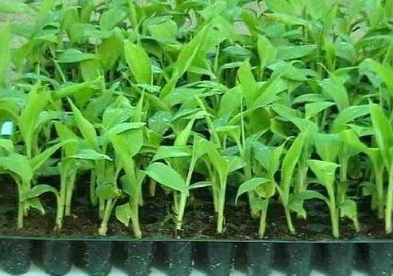

The Chief's Agritech Consultancy
Potato Farming
Planting- Plant seed potatoes (pieces of whole potato or a small whole potato, with at least 2 eyes per piece).
- You may start planting earlier, as soon as soil can be worked.
- If you are cutting up potato pieces for planting, do so 1-2 days ahead of time. This will give them the chance to “heal” and form a protective layer, both for moisture retention and rot resistance.
- Spread and mix in manure or organic compost in the bottom of the trench before planting.
- Plant seed potatoes one foot apart in a 4-inch deep trench, eye side up.
- Practice yearly crop rotation.
Care
- Potatoes thrive in well-drained, loose soil.
- Potatoes need consistent moisture.
- Hilling should be done before the potato plants bloom, when the plant is about 6 inches tall. Hoe the dirt up around the base of the plant in order to cover the root as well as to support the plant. Bury them in loose soil.
- Hilling keeps the potatoes from getting sunburned, which can cause them to turn green and produce a chemical called solanine. Solanine gives off a bitter taste and is toxic, so do not eat green potatoes.
- You will need to hill potatoes every couple of weeks to protect your crop.

- Aphids
- Potato Blight is a fungal disease that affects potatoe plants.
Tomato Farming
Planting
- Select a site with full sun and well-drained soil.
- Two weeks before transplanting seedlings outdoors, till soil to about 1 foot and mix in aged manure, compost, or fertilizer. Learn more about preparing soil for planting.
- Harden off transplants for a week before moving outdoors.
- Establish tomato stakes in the soil at the time of planting. Staking keeps developing tomato fruit off the ground, while caging lets the plant hold itself upright. Some sort of support system is recommended.
- Plant seedlings two feet apart.
- Pinch off a few of the lower branches on transplants, and plant the root ball deep enough so that the remaining lowest leaves are just above the surface of the soil.
- Water well to reduce shock to the roots.
- Water generously for the first few days.
- Mulch five weeks after transplanting to retain moisture.
- Fertilize two weeks prior to first picking and again two weeks after first picking.
- If using stakes, prune plants by pinching off suckers so that only a couple stems are growing per stake.
- Practice crop rotation from year to year to prevent diseases.
Pests/Diseases
- Tomato hornworms and whiteflies.
- Aphids
- Flea Beetles
- Tomato Hornworm
- Whiteflies
- Blossom-End Rot
- Late Blight is a fungal disease that can strike during any part of the growing season. It will cause grey, moldy spots on leaves and fruit which later turn brown. The disease is spread and supported by persistent damp weather.
Watermelon Farming
Planting
- If you live in warmer climates, you can sow seeds directly outdoors, but wait until the soil temperature warms to at least 70°F to avoid poor germination.
- If you are in a cooler zone, start seeds indoors about a month before transplanting.
- Amend soil with aged manure, seaweed, and/or compost before planting. Watermelons are heavy feeders. Learn more about soil amendments and preparing soil for planting.
- Watermelons prefer a soil pH between 6 and 6.8.
- Growing the vines in raised rows, known as hills, ensures good drainage.
- If you’re growing in rows, space 6 feet by 6 feet apart.
- Watermelons like loamy, well-drained soil. Handle them gently when you transplant.
- After you transplant, cover the plants with row covers to keep pests at bay. You’ll remove the row covers when you see both male and female flowers on the vine.
Care
- Mulching with black plastic will serve multiple purposes: it will warm the soil, hinder weed growth, and keep developing fruits clean.
- Watering is very important—from planting until fruit begins to form.
- Keep soil moist, but not waterlogged. Water at the vine’s base in the morning, and try to avoid wetting the leaves and avoid overhead watering.
- Reduce watering once fruit are growing. Dry weather produces the sweetest melon.
- If you choose to fertilize (and many do), make sure it delivers more nitrogen than phosphorus and potassium. However, after flowering begins, use a fertilizer with less nitrogen.
- Pruning isn’t necessary, but vine productivity may be improved if you do not allow lateral vines to grow and stick to the main vine. When the plant is young, just cut off the end buds as they form (before the side shoots become vines). You can also pinch off some blossoms to focus the energy on fewer melons.
- Vines produce male and female flowers separately on the same plant. They often begin producing male flowers several weeks before the females appear. Do not be concerned if the male flowers fall off. The female flowers (which have a swollen bulb at the base) will stay on the vine and bear fruit.
- Blossoms require pollination to set fruit.
- As fruit is ripening, prevent rotting by gently lifting it and putting cardboard or straw between the fruit and the soil.
Pests/Diseases
- Aphids.
- Cucumber Beetles.
- Squash Vine Borer Moths.
- Fusarium Wilt.
Cabbage Farming
Planting
- Start cabbage seeds indoors 6 to 8 weeks before planting.
- Harden off plants over the course of a week. To prepare soil, till in aged manure or compost.
- Transplant outdoors 2 to 3 weeks before the last expected frost date. Choose a cloudy afternoon.
- Plant 12 to 24 inches apart in rows, depending on size of head desired. The closer you plant, the smaller the heads.
- Mulch thickly to retain moisture and regulate soil temperature.
- Practice crop rotation with cabbage year to year to avoid a buildup of soil borne diseases.
- Although cabbage, broccoli, and cauliflower are closely related, and require similar nutrients, it’s best not to plant them together. They are all heavy feeders, depleting the soil faster of required nutrients; plus, they will attract the same pests and diseases. For cabbage, also avoid proximity to strawberries and tomatoes.
- Cabbage can be grown near beans and cucumbers.
- When transplants reach 5 inches tall, thin to make sure they are still the desired length apart. (The plants you remove can be transplanted elsewhere in your garden.)
- Fertilize 3 weeks after transplanting.
- Keep soil moist with mulch and water 2 inches per week.
Care
Pests/Diseases
- Aphids
- Cabbage Root Maggots.
- Flea Beetles.
- Cutworms.
Onions & Garlic Farming
Planting
- Garlic can be planted in the spring as soon as the ground can be worked,
- Break apart cloves from bulb a few days before planting, but keep the papery husk on each individual clove.
- Get cloves from a order seed company or a local nursery.
- Ensure soil is well-drained with plenty of organic matter. Select a sunny spot.
- Place cloves 4 inches apart and 2 inches deep, in their upright position (the wide root side facing down and pointed end facing up).
- Young shoots can’t survive in temps below 20°F on their own. Keep them under cover.
- Cut off any flower shoots that emerge in spring. These may decrease bulb size.
- Weed as needed.
- Garlic requires adequate levels of nitrogen. Fertilize accordingly, especially if you see yellowing leaves.
- Water every 3 to 5 days during bulbing.
Pests/Diseases
Spinach & Kale Farming
Planting
- Prepare the soil with aged manure about a week before planting.
- Although seedlings can be propagated indoors, it is not recommended, as seedlings are difficult to transplant.
- Spring plantings can be made as soon as the soil can be properly worked. It’s important to seed as soon as you can to give spinach the required 6 weeks of cool weather from seeding to harvest.
- Select a site with full sun to light shade and well-drained soil.
- Sow seeds ½ inch to 1 inch deep, covering lightly with soil. Sow about 12 seeds per foot of row, or sprinkle over a wide row or bed.
- Soil should not be warmer than 70º F in order for germination.
Care
- Fertilize only if necessary due to slow growth, or use as a supplement if your soil pH is inadequate.
- When seedlings sprout to about two inches, thin them to 3-4 inches apart.
- Beyond thinning, no cultivation is necessary.
- Keep soil moist with mulching.
- Water regularly.
Pests/Diseases
- Leaf Miners: Radishes attract leaf miners away from spinach. The damage that the leaf miners do to radish leaves doesn’t prevent the radishes from growing underground.
- Bolting
- Mosaic Virus/Blight
- Downy Mildew
Banana Farming
Banana Plant DevelopmentThe trunklike stem of a banana plant is a pseudostem that is made from a bundled sheath of leaves. Leaves within the pseudostem flower and produce the banana fruit, though the flowers typically aren't pollinated, so no true seeds are produced within that fruit. The fibrous roots of the banana plant grow extensively, in some cases producing a root mat up to 30 feet wide.
Rhizome PropagationLarge corms or rhizomes develop within the root mat, serving as the point from which banana pseudostems grow. You can divide one of these rhizomes into smaller pieces known as "bits" to separate the individual growth points, known as meristems, within it, as each meristem serves as a point of new growth for the banana plant. You can then plant the bits, and as long as each planted piece contains at least one meristem, it will develop into a new banana plant over the course of two years.
Sucker PropagationIf harvested when they are small, you can replant the suckers developed by rhizomes to create new banana plants within a single year. Two types of suckers develop on banana plants, but only one type works well to produce a new plant. When leaves begin to appear on the suckers, look for the "sword suckers" that develop straight, thin leaves initially instead the "water suckers" that develop broad leaves. Choosing sword suckers over water suckers produces both thicker pseudostems and larger fruit yields.
Proper Care
However you propagate the banana, proper care is important to make sure the banana plant thrives and produces fruit. Bananas do best when planted in fertile soil that remains moist. They need full sun or partial shade. The plants require significant nutrients due to their large root system and leaf-based pseudostems, so you should fertilize regularly. Remove extra suckers to ensure the primary pseudostem is the focus of development. Shield the plant from heavy winds and freezing temperatures for the best chances of fruit.
Pests/Diseases
- Sap-sucking insects – Mealybugs, red spider mites and aphids may also pay a visit to banana plants.
- Scarring beetle – The banana fruit scarring beetle, or coquito, invades the bunches when the fruit is young.
- Weevils – The black weevil or banana stalk borer, banana weevil borer or corm weevil.
- Nematodes – Nematodes are a common banana plant pest. They cause rotting of the corms and act as a vector to the fungus Fusarium oxysporum.
- Thrips – Banana rust thrips, it stains the peel, causing it to split and exposes the flesh which then begins to rot. Insecticidal dust (Diazinon) or a spraying of Dieldrin can control thrips, which pupate in the soil. Additional insecticides combined with polyethylene bagging are also used to control thrips on commercial farms.
- Cigar end rot is a fungal disease caused by either Verticillium fungi or Trachysphaera. In the foremost case, the tips of the banana (fingers) wrinkle and darken and begin to rot.
Pest attacked banana leaf.